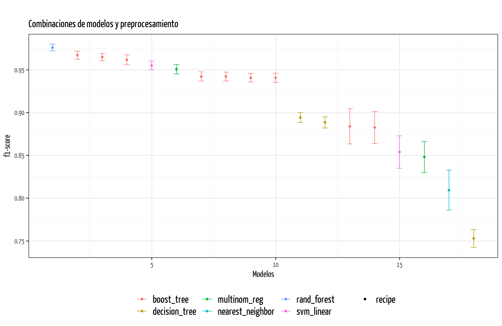
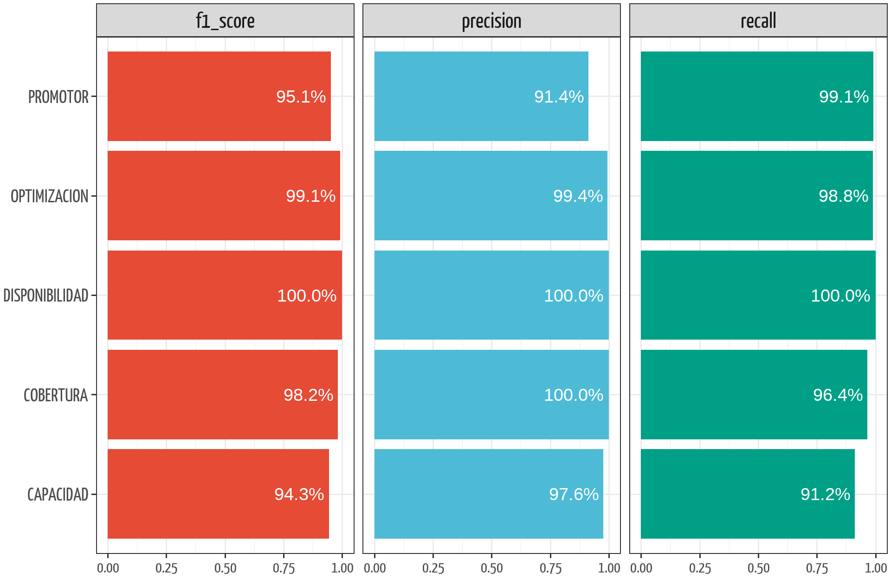
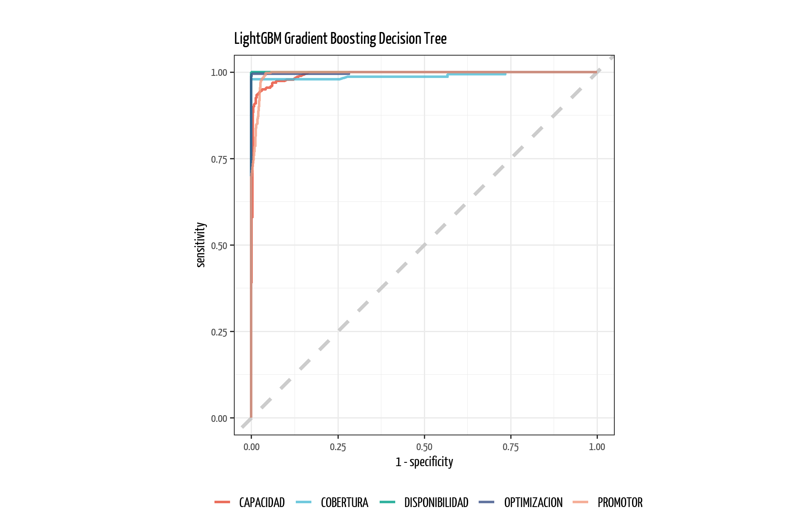
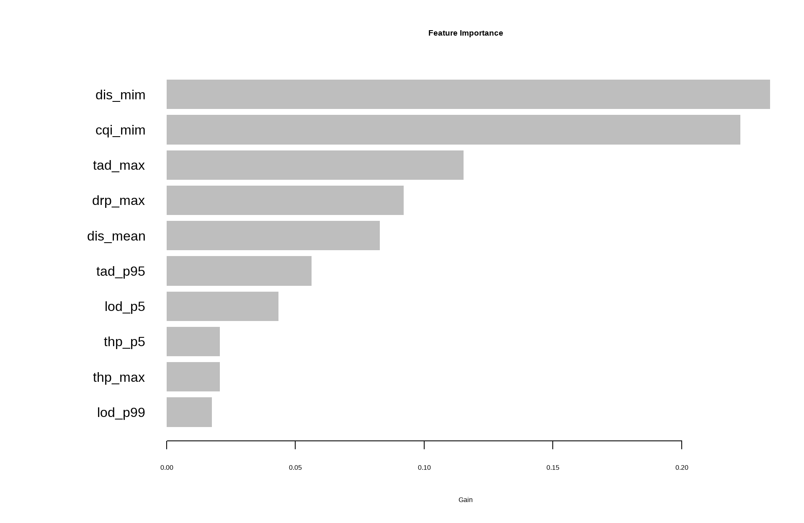

metricas_training <- final_tune |>
rank_results(select_best = TRUE, rank_metric = "f_meas") |>
select(modelo = wflow_id, .metric, mean, rank) |>
pivot_wider(names_from = .metric, values_from = mean) |>
select(modelo, f1_tr = f_meas, prec_tr = precision,
rec_tr = recall)11 Resultados
Una vez que hemos entrenado el modelo con validación cruzada, el siguiente paso es extraer las métricas resultantes para el análisis del error.
11.1 Rendimiento en entrenamiento
final_tune |>
autoplot(rank_metric = "f_meas", metric = "f_meas", select_best = TRUE) +
ylab("f1-score") +
xlab("Modelos") +
labs(title = "Combinaciones de modelos y preprocesamiento") +
theme(
plot.title = element_text(size = 30),
legend.position = "bottom",
legend.text = element_text(size = 30),
axis.title = element_text(size = 25),
axis.text = element_text(size = 20))
En la figura Figure 11.1 se observan los resultados del entrenamiento y una comparación con intervalos de confianza de cada modelo ajustado.
Mostrar Código
metricas_training |>
gt() |>
tab_header(
title = md("**Resultados con Conjunto de Entrenamiento**"),
subtitle = md("Modelos sin sobreajuste")
) |>
gt_theme_538() |>
cols_label(
f1_tr = md("**F1-Score**"),
prec_tr = md("**Precisión**"),
rec_tr = md("**Recall**"),
) |>
data_color(
columns = where(~ is.numeric(.x)),
method = "numeric",
palette = "RdYlGn",
reverse = FALSE) |>
fmt_number(columns = where(~ is.numeric(.x)), decimals = 4) |>
cols_align_decimal() |>
cols_align(align = "center", columns = where(~ is.numeric(.x)))| Resultados con Conjunto de Entrenamiento | |||
| Modelos sin sobreajuste | |||
| modelo | F1-Score | Precisión | Recall |
|---|---|---|---|
| boruta_regular_rand_forest_ranger | 0.9760 | 0.9784 | 0.9742 |
| boruta_regular_bt_lightgbm | 0.9669 | 0.9716 | 0.9639 |
| infgain_regular_7_bt_lightgbm | 0.9648 | 0.9693 | 0.9622 |
| infgain_regular_9_bt_lightgbm | 0.9615 | 0.9641 | 0.9596 |
| infgain_regular_7_svm_linear_kernlab | 0.9549 | 0.9602 | 0.9511 |
| infgain_regular_7_glmnet | 0.9506 | 0.9531 | 0.9490 |
| infgain_regular_7_xgboost | 0.9421 | 0.9562 | 0.9345 |
| infgain_regular_9_xgboost | 0.9420 | 0.9523 | 0.9350 |
| boruta_regular_xgboost | 0.9406 | 0.9547 | 0.9332 |
| infgain_norm_7_xgboost | 0.9406 | 0.9543 | 0.9332 |
| infgain_regular_7_decision_tree_partykit | 0.8940 | 0.8508 | 0.7853 |
| mrmr_regular_top20_decision_tree_partykit | 0.8885 | 0.8456 | 0.7807 |
| infgain_regular_7_nzv_xgboost | 0.8838 | 0.8886 | 0.8829 |
| infgain_regular_7_nzv_bt_lightgbm | 0.8823 | 0.8871 | 0.8813 |
| infgain_regular_7_nzv_svm_linear_kernlab | 0.8537 | 0.8627 | 0.8505 |
| infgain_regular_7_nzv_glmnet | 0.8481 | 0.8542 | 0.8466 |
| infgain_regular_7_nzv_knn | 0.8093 | 0.8202 | 0.8053 |
| infgain_regular_7_nzv_decision_tree_partykit | 0.7527 | 0.7207 | 0.5824 |
Posterior a la revisión de los resultados con los datos de entrenamiento con validación cruzada, procedemos a evaluar los modelos contra el conjunto de validación.
Lo que haremos primero será extraer el nombre de todos los “workflows” y luego extraer los mejores modelos ajustados con validación cruzada. Por mejores se entiende que es la combinación de hiperparámetros que resultó en el f1-score más alto.
best <- metricas_training |> pull(modelo) %>% set_names(.)
# Seleccionar los modelos con los hiperparámetros que generaron el f1-score
# más alto.
lista_mejores <- best |>
map(~ tune_res |> extract_workflow_set_result(id = .x) |>
select_best(metric = "f_meas"))En la sección Chapter 7 mencionamos la necesidad de crear un conjunto de validación para usarlo con la función last_fit(). Es en este punto donde se utiliza el conjunto de validación, el cual se encuentra encapsulado en un objeto de tipo validation_set que es con lo que puede trabjar la función last_fit().
Recordemos primero el contenido de ctl_split, el cual definimos en la sección Chapter 7
ctl_split<Training/Validation/Testing/Total>
<3396/1133/1135/5664>El conjunto de validación es el conjunto de entrenamiento y el conjunto de validación:
ctl_validation_set# A tibble: 1 × 2
splits id
<list> <chr>
1 <split [3396/1133]> validationLo que haremos a continuación será usar los mejores modelos obtenidos en el entrenamiento con validación cruzada y comprobarlos contra el conjunto de validación. Esta tarea en realidad se realizó durante muchas veces, siguiendo la metodología descrita en la sección Section 4.3, iterando hasta obtener los hiperparámetros que no generaban sobreajuste.
final_val <- map2(
.x = best,
.y = lista_mejores, ~ tune_res %>%
extract_workflow(id = .x) %>%
finalize_workflow(.y) %>%
last_fit(split = ctl_validation_set$splits[[1]], metrics = mset))metricas_validation <- final_val %>%
map_dfr(~ collect_metrics(.x), .id = "modelo") %>%
select(-.estimator) |>
pivot_wider(names_from = .metric, values_from = .estimate) |>
select(modelo, f1_val = f_meas, prec_val = precision,
rec_val = recall, roc_auc)Debido a que es más eficiente realizar de una vez la comparación de las métricas obtenidas en entrenamiento contra validación, no presentaremos los resultados de entrenamiento por separado, sino que crearemos un dataframe que contenga la comparación.
comparacion <- metricas_training |>
left_join(metricas_validation, join_by(modelo)) |>
select(-roc_auc) |>
relocate(modelo,
f1_tr,
f1_val,
rec_tr,
rec_val,
prec_tr,
prec_val) |>
arrange(-f1_val)Mostrar Código
comparacion |>
gt() |>
tab_header(
title = md("**Evaluación con Conjunto de Validación**"),
subtitle = md("Filtrado solo modelos sin sobreajuste")
) |>
gt_theme_538() |>
data_color(
columns = where(~ is.numeric(.x)),
method = "numeric",
palette = "RdYlGn",
reverse = FALSE) |>
fmt_number(columns = where(~ is.numeric(.x)), decimals = 4) |>
cols_align_decimal() |>
cols_align(align = "center", columns = where(~ is.numeric(.x)))| Evaluación con Conjunto de Validación | ||||||
| Filtrado solo modelos sin sobreajuste | ||||||
| modelo | f1_tr | f1_val | rec_tr | rec_val | prec_tr | prec_val |
|---|---|---|---|---|---|---|
| boruta_regular_rand_forest_ranger | 0.9760 | 0.9844 | 0.9742 | 0.9844 | 0.9784 | 0.9846 |
| boruta_regular_bt_lightgbm | 0.9669 | 0.9717 | 0.9639 | 0.9715 | 0.9716 | 0.9739 |
| infgain_regular_7_bt_lightgbm | 0.9648 | 0.9684 | 0.9622 | 0.9680 | 0.9693 | 0.9712 |
| infgain_regular_9_bt_lightgbm | 0.9615 | 0.9650 | 0.9596 | 0.9634 | 0.9641 | 0.9670 |
| infgain_regular_7_svm_linear_kernlab | 0.9549 | 0.9576 | 0.9511 | 0.9544 | 0.9602 | 0.9620 |
| infgain_regular_7_glmnet | 0.9506 | 0.9542 | 0.9490 | 0.9533 | 0.9531 | 0.9562 |
| infgain_regular_7_xgboost | 0.9421 | 0.9514 | 0.9345 | 0.9475 | 0.9562 | 0.9611 |
| infgain_regular_9_xgboost | 0.9420 | 0.9463 | 0.9350 | 0.9411 | 0.9523 | 0.9549 |
| infgain_norm_7_xgboost | 0.9406 | 0.9458 | 0.9332 | 0.9415 | 0.9543 | 0.9563 |
| boruta_regular_xgboost | 0.9406 | 0.9458 | 0.9332 | 0.9396 | 0.9547 | 0.9585 |
| infgain_regular_7_nzv_bt_lightgbm | 0.8823 | 0.9100 | 0.8813 | 0.9072 | 0.8871 | 0.9139 |
| infgain_regular_7_nzv_xgboost | 0.8838 | 0.9084 | 0.8829 | 0.9058 | 0.8886 | 0.9120 |
| infgain_regular_7_decision_tree_partykit | 0.8940 | 0.8978 | 0.7853 | 0.7865 | 0.8508 | 0.8555 |
| mrmr_regular_top20_decision_tree_partykit | 0.8885 | 0.8963 | 0.7807 | 0.7850 | 0.8456 | 0.8543 |
| infgain_regular_7_nzv_svm_linear_kernlab | 0.8537 | 0.8691 | 0.8505 | 0.8649 | 0.8627 | 0.8749 |
| infgain_regular_7_nzv_glmnet | 0.8481 | 0.8662 | 0.8466 | 0.8652 | 0.8542 | 0.8684 |
| infgain_regular_7_nzv_knn | 0.8093 | 0.8365 | 0.8053 | 0.8337 | 0.8202 | 0.8402 |
| infgain_regular_7_nzv_decision_tree_partykit | 0.7527 | 0.7770 | 0.5824 | 0.5986 | 0.7207 | 0.7336 |
En la tabla Table 11.2 se aprecia que ninguno de los modelos presenta sobreajuste.
Mostrar Código
metricas_training |>
left_join(metricas_validation, join_by(modelo)) |>
slice(1:5) |>
select(modelo, roc_auc) |>
arrange(-roc_auc) |>
gt() |>
gt_theme_538() |>
tab_header(
title = md("**Evaluación del ROC-AUC**"),
subtitle = md("Top 5 Modelos")
) |>
fmt_number(columns = where(~ is.numeric(.x)), decimals = 4) |>
data_color(
columns = where(~ is.numeric(.x)),
method = "numeric",
palette = "RdYlGn",
reverse = FALSE)| Evaluación del ROC-AUC | |
| Top 5 Modelos | |
| modelo | roc_auc |
|---|---|
| boruta_regular_rand_forest_ranger | 0.9993 |
| boruta_regular_bt_lightgbm | 0.9979 |
| infgain_regular_7_bt_lightgbm | 0.9964 |
| infgain_regular_9_bt_lightgbm | 0.9950 |
| infgain_regular_7_svm_linear_kernlab | 0.9609 |
11.2 Selección de modelos
Escogeremos los primeros tres modelos para que puedan competir usando el dataset de prueba.
mejorcitos <- comparacion |>
slice_max(f1_val, n = 3) |>
pull(modelo)
lista_mejores <- mejorcitos %>%
map(~ final_tune %>% extract_workflow_set_result(id = .x) %>%
select_best(metric = "f_meas")) |>
set_names(mejorcitos)En esta ocasión utilizaremos el objeto ctl_split y le diremos que haga un último ajuste (last_fit), pero en esta ocasión usando únicamente los tres mejores modelos que resultaron en el conjunto de validación y, adicionalmente que entrene estos modelos con esa combinación específica de hiperparámetros, utilizando tanto los datos de entrenamiento como los datos de validación. Para lograr esto agregamos el parámetro add_validation_set = TRUE.
final_test <- map2(
.x = mejorcitos,
.y = lista_mejores,
~ tune_res |>
extract_workflow(id = .x) |>
finalize_workflow(.y) |>
last_fit(split = ctl_split, metrics = mset, add_validation_set = TRUE))metricas_test <- final_test |>
map_dfr(~ collect_metrics(.x), .id = "modelo") |>
select(-.estimator) |>
pivot_wider(names_from = .metric, values_from = .estimate) |>
select(modelo, f1_test = f_meas, prec_test = precision,
rec_test = recall, roc_auc) |>
mutate(modelo = mejorcitos)comparacion_final <- metricas_training |>
inner_join(metricas_test, join_by(modelo)) |>
relocate(
modelo,
f1_tr,
f1_test,
rec_tr,
rec_test,
prec_tr,
prec_test
) |>
arrange(-f1_test)Mostrar Código
comparacion_final |>
gt() |>
gt_theme_538() |>
tab_header(
title = md("**Evaluación final con datos de prueba**"),
subtitle = md("Top 3 Modelos")
) |>
fmt_number(columns = where(~ is.numeric(.x)), decimals = 4) |>
data_color(
columns = where(~ is.numeric(.x)),
method = "numeric",
palette = "RdYlGn",
reverse = FALSE)| Evaluación final con datos de prueba | |||||||
| Top 3 Modelos | |||||||
| modelo | f1_tr | f1_test | rec_tr | rec_test | prec_tr | prec_test | roc_auc |
|---|---|---|---|---|---|---|---|
| boruta_regular_rand_forest_ranger | 0.9760 | 0.9763 | 0.9742 | 0.9774 | 0.9784 | 0.9755 | 0.9991 |
| boruta_regular_bt_lightgbm | 0.9669 | 0.9734 | 0.9639 | 0.9712 | 0.9716 | 0.9767 | 0.9962 |
| infgain_regular_7_bt_lightgbm | 0.9648 | 0.9722 | 0.9622 | 0.9701 | 0.9693 | 0.9757 | 0.9935 |
Los resultados de la tabla Table 11.4 indican que el primer candidato presentó un ligero sobreajuste en la precisión. Los dos modelos restantes no presentan sobreajuste. Seleccionaremos el modelo con el mejor f1-score en los datos de prueba que no presente sobreajuste.
best_model <- "boruta_regular_bt_lightgbm"
lg <- final_test |>
set_names(mejorcitos) |>
keep_at(best_model) |>
pluck(1)predicciones <- lg |>
collect_predictions(summarize = T) |>
select(diag, .pred_class)Ahora nos disponemos a calcular las métricas con base a las predicciones de clase. Para esto crearemos un dataframe que solo contenga la ground-truth label que en este caso es la columna diag y la estimación o predicción que es la columna .pred_class.
predicciones |>
head() |>
gt() |>
gt_theme_538() |>
cols_align(align = "left") |>
tab_header(
title = md("**Muestra de dataset con predicciones**"),
subtitle = md("Calculo de métricas de clase")
)| Muestra de dataset con predicciones | |
| Calculo de métricas de clase | |
| diag | .pred_class |
|---|---|
| DISPONIBILIDAD | DISPONIBILIDAD |
| OPTIMIZACION | OPTIMIZACION |
| COBERTURA | COBERTURA |
| CAPACIDAD | CAPACIDAD |
| COBERTURA | COBERTURA |
| DISPONIBILIDAD | DISPONIBILIDAD |
Importante
Durante el proceso de evaluación de los modelos en nuestro proyecto, nos enfrentamos a un desafío significativo debido al desbalance de clases en nuestro conjunto de datos. Al utilizar yardstick (Kuhn, Vaughan, and Hvitfeldt 2023) para calcular la precisión multiclase, nos encontramos con advertencias indicando que algunos niveles no tenían eventos predichos, lo que resultaba en una precisión indefinida para esas clases y, por ende, afectaba el promedio de precisión general del modelo.
Este comportamiento de yardstick puede ser problemático en nuestro contexto, ya que las clases con cero predicciones son excluidas del cálculo del promedio, lo que podría dar una impresión engañosa de un rendimiento más bajo de lo real. En contraste, classification_report de scikit-learn maneja estas situaciones asignando un valor de cero a las métricas de precisión, recall y f1-score para las clases sin eventos predichos. Esto refleja de manera más precisa la incapacidad del modelo para identificar esas clases y proporciona una imagen más realista del rendimiento del modelo.
La decisión de utilizar classification_report se basó en la necesidad de tener una representación más fiel del desempeño de los modelos, especialmente en lo que respecta a la precisión. Queríamos asegurarnos de que todas las clases, independientemente de su frecuencia, fueran consideradas en la evaluación del modelo. Esto es crucial en nuestro proyecto, donde cada clase tiene importancia y el objetivo es lograr un modelo que sea capaz de identificar todas las categorías de diagnóstico de manera efectiva.
En resumen, classification_report nos proporcionó una visión más integral y menos sesgada del rendimiento de los modelos en presencia de clases desbalanceadas, lo que nos permitió tomar decisiones más informadas durante la selección y ajuste del modelo final.
source("_python.R")from sklearn.metrics import classification_reportimport pandas as pd
import numpy as npy_true = r.predicciones['diag']
y_pred = r.predicciones['.pred_class']
reporte_dict = classification_report(y_true, y_pred, output_dict=True)
reporte_df = pd.DataFrame(reporte_dict).transpose()res_test <- py$reporte_df |>
rownames_to_column(var = "categoria") |>
as_tibble(.name_repair = make_clean_names) |>
slice(1:5) |>
select(-support) |>
pivot_longer(
cols = where(is.numeric), names_to = "metric", values_to = "value")porcentaje <- label_percent(decimal.mark = ".", suffix = "%", accuracy = 0.1)res_test |>
ggplot(aes(x = value, y = categoria)) +
geom_col(aes(fill = metric)) +
scale_fill_paletteer_d(`"ggsci::nrc_npg"`) +
geom_text(aes(label = porcentaje(value)),
vjust = 0.5,
hjust = 1.1,
color = "white",
size = 10) +
facet_grid(~ metric, scales = "free") +
theme(
plot.margin = unit(c(1, 1, 1, 1), "mm"),
legend.position = "none",
axis.title = element_blank(),
axis.text = element_text(size = 30),
strip.text = element_text(size = 35),
axis.text.x = element_text(size = 25))
Se observa en la figura Figure 11.2 el desempeño del modelo con el conjunto de prueba y cada una de las métricas para cada una de las clases. Al parecer el modelo captura de manera muy eficiente los patrones relacionados a la disponibilidad, sin embargo, la precisión de los promotores y el recall de la categoría de capacidad son particularmente bajos en relación al resto de métricas.
lg |>
collect_predictions() |>
roc_curve(diag, .pred_CAPACIDAD:.pred_PROMOTOR) |>
ggplot(aes(1 - specificity, sensitivity, color = .level)) +
geom_abline(lty = 2, color = "gray80", linewidth = 1.5) +
geom_path(alpha = 0.8, linewidth = 1.2) +
coord_equal() +
scale_color_paletteer_d(`"ggsci::nrc_npg"`) +
labs(title = "LightGBM Gradient Boosting Decision Tree") +
theme(
plot.title = element_text(size = 30),
legend.position = "bottom",
legend.text = element_text(size = 25),
axis.title = element_text(size = 25),
axis.text = element_text(size = 20))
11.2.1 Importancia de los predictores
lgbm |> lgb.plot.importance(top_n = 10, cex = 2)
La gráfica Figure 11.4 se realizó después de ajustar el modelo seleccionado boruta_regular_bt_lightgbm con todos los datos, es decir, con los datos de entrenamiento, validación y prueba. Contrario a lo que esperábamos, el prb no se encuentra en este top. Es posible que Boruta lo haya eliminado y dejado únicamente thp.
En entrevistas finales, como parte del Human-in-the-Loop, los SMEs nos indicaron que cada una de las categorías tiene al menos un predictor en este top 10.